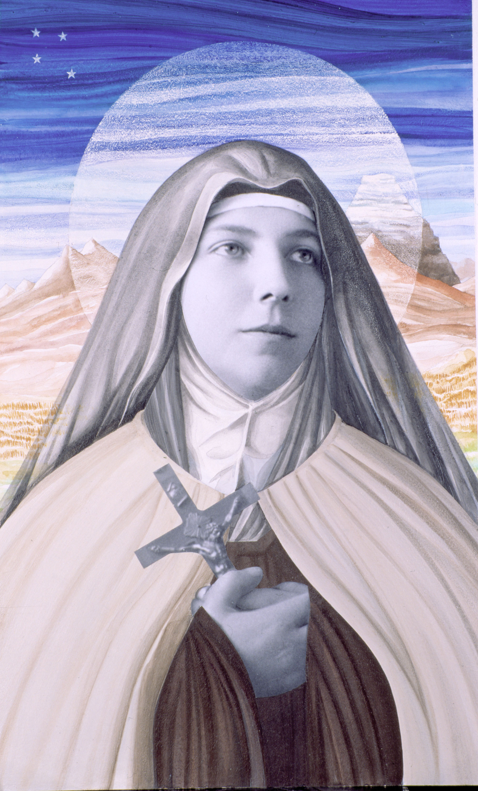

Santos Chilenos
Chile tiene propiamente dos santos, santa Teresa de Los Andes y san Alberto Hurtado. Son los únicos que han llegado hasta el final del camino del proceso de canonización. Tras ellos se encuentran nuestros beatos, que son cuatro: Laura Vicuña, Ceferino Namuncurá, José Agustín Fariña y María Crescencia Pérez. Antes están los venerables, al menos seis en el caso chileno, y los siervos de Dios, que llegan a ser cerca de quince. También existen otros que simplemente gozan de “fama de santidad” aunque sus causas no han sido iniciadas formalmente. De todos ellos trata este artículo, santos, beatos, venerables, siervos de Dios o personas cuyo ejemplo de santidad marcó, de alguna manera, el permanente proceso de evangelización en esta tierra y quienes conforman el gran mosaico de la santidad en Chile.
San Alberto Hurtado
(Alberto Hurtado Cruchaga; Viña del Mar, 1901 - Santiago, 1952) Jurista y sacerdote jesuita chileno, conocido también como el padre Hurtado. Canonizado en 2005 por el papa Benedicto XVI, se le considera una de las figuras religiosas chilenas más relevantes del siglo XX.

Alberto Hurtado realizó sus estudios en el colegio jesuita San Ignacio de Santiago de Chile, de donde pasó a la Universidad Católica de la misma ciudad para cursar la carrera de derecho, que concluyó en 1924. Poco después ingresó como novicio en la orden jesuita, en la casa de formación que la orden tenía en la ciudad de Chillán. Tras ello marchó a Argentina, España y Bélgica (Universidad de Lovaina) para completar sus estudios y su formación religiosa. En 1933 fue ordenado sacerdote.
Ya de regreso a Chile, en 1936 comenzó su labor docente en la universidad como doctor en psicología y pedagogía. En 1942 fue nombrado asesor en el área de juventud de la organización Acción Católica, con la que recorrió todo el país fundando centros de asistencia juveniles, sin dejar prácticamente provincia sin visitar. Siguiendo con su obra social y catequística, en el año 1944 fundó el Hogar de Cristo, centro creado con el propósito de dar cobijo a los desamparados. Por su intensa actividad, el padre Hurtado llegaría a ser conocido como "el cura de los pobres".
En 1948, cuando las ideas marxistas amenazaban con extenderse por las capas más desprotegidas y la pujante clase obrera chilena por medio de los sindicatos, Alberto Hurtado creó un sindicato católico, Acción Sindical Chilena (ASICH), con el objeto de oponer resistencia a un ideario político que iba en contra de los valores defendidos por la Iglesia Católica.
Inspirado en la doctrina de la encíclica Quadragesimo Anno, publicó varios libros y fundó y dirigió la importante revista Mensaje, que se publica todavía hoy. Entre sus obras destacan ¿Es Chile un país católico?, El Humanismo social cristiano en los documentos de la jerarquía católica, Sindicalismo, historia, teoría y práctica, La crisis afectiva de la adolescencia y La crisis sacerdotal en Chile.
En el año 1977, la Iglesia católica chilena llevó a cabo los primeros trámites del proceso para la beatificación de Alberto Hurtado, el cual no comenzó realmente su curso ordinario hasta el año 1993, fecha en la que el papa Juan Pablo II dio su visto bueno al informe sobre la causa de beatificación. El 10 de octubre de 1994, Alberto Hurtado fue beatificado por el papa Juan Pablo II; once años después, en octubre de 2005, fue canonizado por Benedicto XVI. La festividad de San Alberto Hurtado se celebra el 18 de agosto.
Teresa de Los Andes
Nació en Santiago de Chile el 13 de julio de 1900, en el seno de una familia acomodada muy cristiana. Sus padres fueron Miguel Fernández y Lucía Solar. Desde sus 6 años, asistía con su madre casi a diario a la santa misa y suspiraba por la Comunión, que recibió por primera vez el 11 de septiembre de 1910. Desde entonces procuraba comulgar diariamente y pasar largo rato en diálogo amistoso con Jesús. También desde su niñez vivió una intensa vida mariana que fue uno de los cimientos fuertes de su vida espiritual. El conocimiento y amor de la Madre de Dios vivificó y sostuvo todos los momentos de su camino en el seguimiento de Cristo.
Hizo sus estudios en el colegio del Sagrado Corazón (1907 - 1918). Profundamente afectiva, se creía incapaz de vivir separada de los suyos. Sin embargo, asumió generosamente la prueba de estudiar en régimen de internado los tres últimos cursos, como entrenamiento para la separación definitiva, que consumaría el 7 de mayo de 1919, ingresando en las Carmelitas Descalzas de Los Andes.
A los 14 años el Señor le habló diciéndole que quería su corazón sólo para Él, dándole también la vocación al carmelo. Dentro de su preparación está la lectura de santos carmelitas y la correspondencia con la Priora de Los Andes. A los 17 años expone su ideal carmelita "sufrir y orar" y con ardor defiende su vida contemplativa, que el mundo "tacha de inútil". Le ilusiona saber que su sacrificio servirá para mejorar y purificar al mundo.
Como Carmelita se llamó Teresa de Jesús, no alcanzando a vivir ni un año entero en el convento. Murió el 12 de abril de 1920. Las religiosas aseguraban que había entrado ya santa. De modo que, en tan corto tiempo, pudo consumar la carrera a la santidad que había iniciado muy en serio mucho antes de su primera comunión.
"Cristo, ese loco de amor, me ha vuelto loca", decía.
Por eso, deseando llegar a ser una excelente copia suya, vivió decidida a ir hasta el fin del mundo atravesando el fuego si hubiera sido preciso para serle fiel.
Estaba siempre dispuesta a servir y a sacrificarse por los demás, sobre todo por alegría y felicidad, para hacer amable y atractiva la virtud.
Su vida fue enteramente normal y equilibrada. Alcanzó una envidiable madurez integrando en la más armoniosa síntesis lo divino y lo humano: oración, estudios, deberes hogareños... y deporte, al que era aficionadísima, destacando en la natación y en la equitación.
Como joven bellísima, simpática, deportista, alegre, equilibrada, servicial y responsable, Teresa de Los Andes está en inmejorables condiciones para arrastrar a la juventud en pos de Cristo, y para recordarnos a todos que es preciso cumplir el programa evangélico del amor para realizarnos como personas.
Por su intercesión está derramando el Señor una copiosa lluvia de gracias y favores de toda especie y atrayendo hacia Sí a innumerables hijos pródigos. Su santuario, visitado por más de cien mil peregrinos cada mes, se ha convertido en el centro espiritual de Chile.
Así Teresa de Los Andes viene cumpliendo la misión que ya le fuera reconocida poco después de su muerte: despertar hambre y sed de Dios en nuestro mundo materializado. Beatificada por Juan Pablo II en Santiago de Chile el 3 de abril de 1987, ha sido solemnemente canonizada por el mismo Sumo Pontífice en Roma el 21 de marzo de 1993.